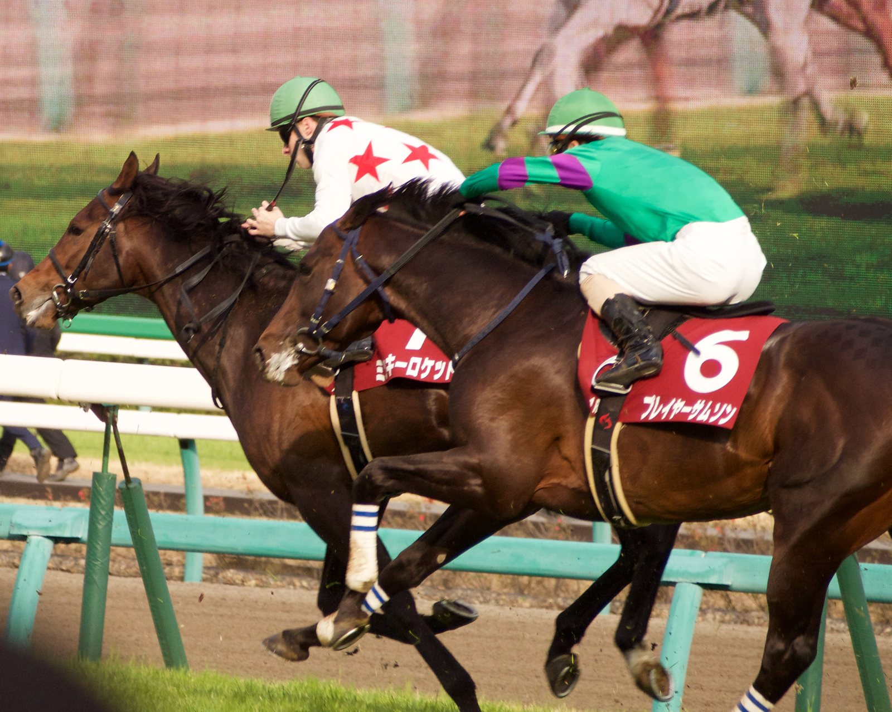

Nevada remonta desde la cola y gana en su debut en Belmont Park
El hijo de Uncle Mo, preparado por Chad Brown y montado por Flavien Prat, se impuso por dos cuerpos en una carrera de no ganadores sobre la milla pese a una salida accidentada.

La carrera se le torció en los primeros metros. Nevada, favorito a 2-1, salió algo hacia dentro y cruzó golpes con El Mercado, un hijo de Curlin vendido por 850.000 dólares en la subasta de dos años de OBS en abril. Desplazado hacia fuera, tuvo que ser retenido para no tocar los talones del que le precedía. Prat acabó devolviéndolo a la cuerda, penúltimo y descolgado del grueso del pelotón en la recta de enfrente.
El jockey francés no tuvo prisa. En la curva el potro empezó a recortar terreno y, al entrar en la recta final, Prat lo abrió a campo libre, a seis o siete caballos de la cuerda. A algo menos de 200 metros de la meta alcanzó a D C's Army, que corría por segunda vez, y se despegó sin apenas exigencia para ganar por dos cuerpos. El crono se detuvo en 1:36.47, con el piso en estado bueno.
Fue la segunda carrera del viernes, una prueba para no ganadores de dos años dotada con 100.000 dólares, de los que Nevada se llevó 55.000. En las apuestas solo aventajó por algo más de 3.000 dólares a E Z Speaker, que salía pegado a la cuerda en su tercera actuación.
El potro corre para Mrs John Magnier, Michael B. Tabor, Derrick Smith, Peter M. Brant y Brook T. Smith, que pagaron un millón de dólares por él como yearling en la venta de Fasig-Tipton en Saratoga de 2025. Lo crió en Ontario Anderson Farms.
Es hijo del fallecido Uncle Mo y de Full Tap, por Tapit, un cruce que suma 26 ganadores de 40 corredores, entre ellos Kingsbarns, ganador de Grado I. Anderson Farms compró Full Tap por 375.000 dólares en Keeneland en 2017. La yegua es también madre de Thermal, por Nyquist, ganador de stakes en Estados Unidos. Su último producto, una potranca de Charlatan llamada Scam, se vendió el mes pasado en la subasta de septiembre de Keeneland por 200.000 dólares.
Por Martín Larrañeta